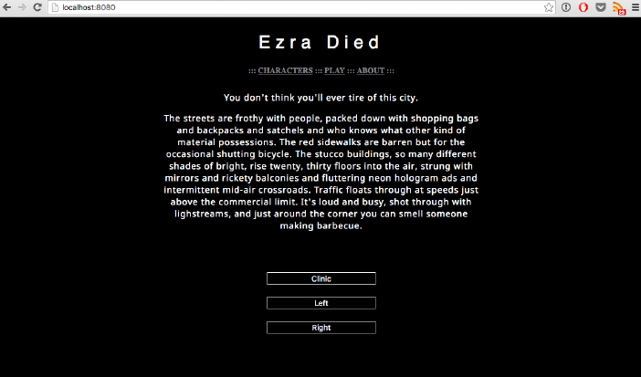

|  |
EZRA DIEDDeveloped from class projectIn-browser text-based science fiction game about the future market of 3D printing bodies. Skills: HTML, CSS, jQuery, JavaScript, JSON |
MuSyC: Music, Synaesthesia, ColourMade at and won the title "Most Interdisciplinary" at HampHack 2016Presented at the 2016 International Association of Empirical Aesthetics Biennial conference, Vienna. An Arduino and hand-made plastic body that is translates pitch and frequency of sound into colored lights of coordinating frequency and amplitude in an educational and engaging model of music-color synesthesia that has many practical applications. More at http://5colldh.org/musyc/ Skills: Arduino |
|

|
MoHo FindMade at and won the title "Most Beneficial to Society" at HackHolyoke 2015An iOS app that tells visually impaired users their location using wifi access points on campus, down to building name and classroom number. It was built in under 24 hours by a group of 4 with no prior experience in Objective-C. Skills: Objective-C, iOS development |